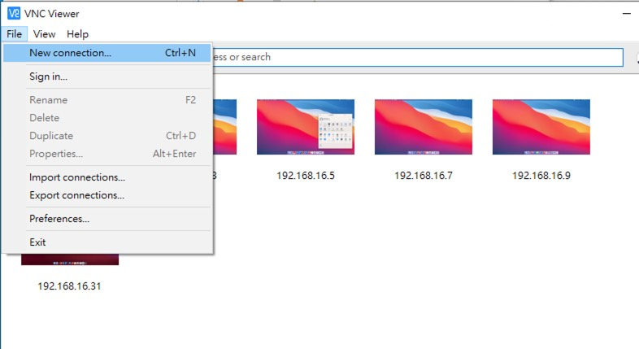
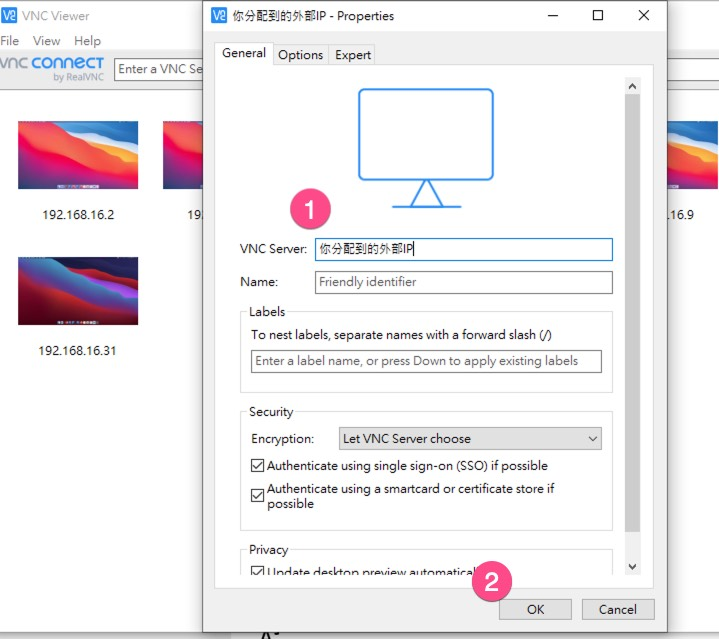
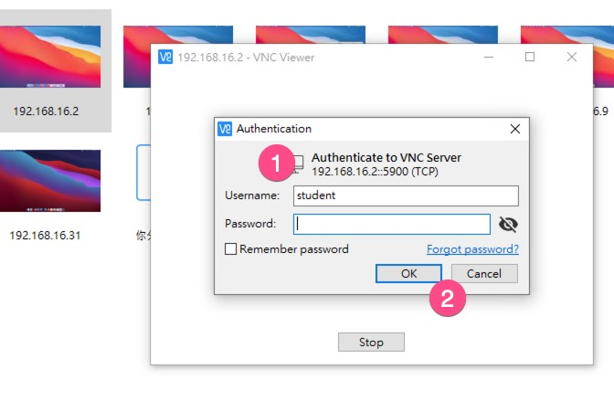

VNC遠端連線
Table of Contents
1 學生/MAC分配
| 班級座號 | 內部IP | 外部IP |
|---|---|---|
| 10209 | 192.168.16.3 | |
| 10237 | 192.168.16.5 | |
| 10531 | 192.168.16.7 | |
| 10135 | 192.168.16.9 | |
| 11626 | 192.168.16.11 | |
| 10721 | 192.168.16.15 | |
| 11020 | 192.168.16.19 | |
| 10818 | 192.168.16.21 | |
| 10823 | 192.168.16.23 | |
| 11102 | 192.168.16.27 | |
| 11412 | 192.168.16.29 | |
| 11401 | 192.168.16.31 |
port: 5900 tcp
2 遠端登入設定
2.1 工具: VNC遠端連線
- 下載VNC Viewer: https://www.realvnc.com/en/connect/download/viewer/windows/
- 安裝
2.2 執行vnc
新增連線

Figure 1: Caption
在VNC Server欄填入你分配到的外部IP，然後按 OK

Figure 2: Caption
Double Click你新增的連線，Username欄填入student，然後按 OK

Figure 3: Caption
2.3 帳號資訊
- 以student登入
- 密碼留空白
- 依上述分配表格使用你相對應的外部IP